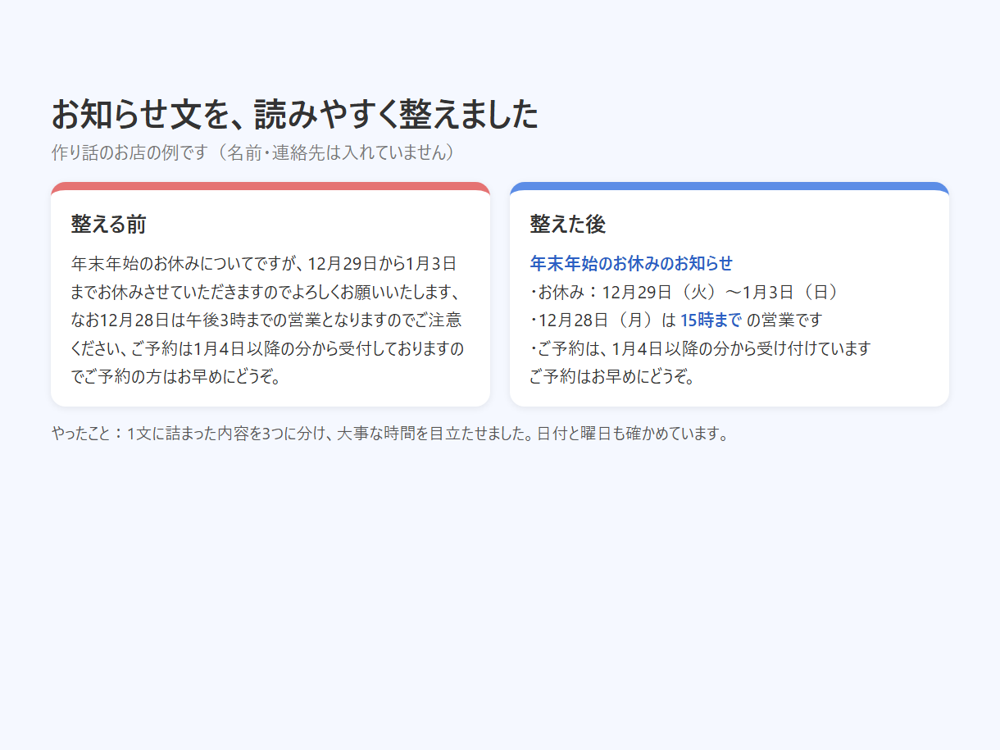
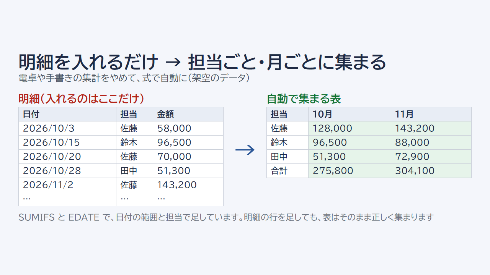
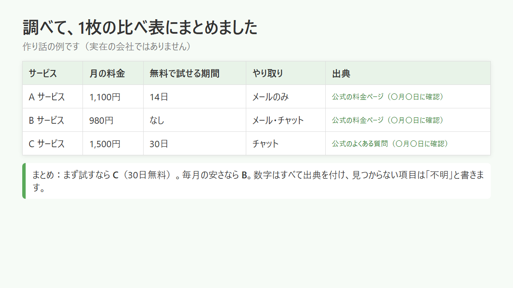

お知らせ・商品説明の文章を、
読みやすく整えます
こんにちは、なおです。お店や教室の「伝えたいのに、うまくまとまらない」文章や表を、AI で下書きし、私が全文を読んで確かめてからお渡しします。
始めたばかりで、まだお仕事の実績はありません。そのぶん、1件ずつ全文を自分で確かめます。
（X では「みっけ」という名前で、作った物のお知らせをしています）
受けているお仕事
文章を整えるお休みや料金変更のお知らせ、商品やサービスの説明、ブログ、案内文。伝えたい内容は変えずに、読みやすくします。
表・データの整理Excel・スプレッドシートの並べかえ、重複のチェック、月ごとの集計など。
調べて1枚にまとめる公開されている情報を調べて、比べる表にまとめます。数字には出典を付け、分からない所は「不明」と書きます。
進め方
- ココナラのメッセージで、整えたい文章や表と「誰に読んでもらうか」を送っていただきます
- AI で下書きを作り、私が全文を読みます。日付・曜日・金額は元の文と1つずつ照らし合わせます
- 整えた物と、主な直し箇所の短い説明をお渡しします
お客様のお名前・ご住所・お電話番号などは AI に入れません。文章も表も（表の中のお客様名や担当者名も）、記号に置きかえて送ってください。伏せずに届いたときは、AI に入れる前にこちらで伏せます。やり取りはココナラのメッセージ（文章）だけで進め、ココナラの外でのやり取りはしていません。
見本（どれも作り話の例です）



無料で使える道具
年末年始のお休みのお知らせ作成（曜日チェックつき）
お休みの日を選ぶだけで、曜日の合ったお知らせ文ができます。入れた文はどこにも送りません。
年賀状じまいの文例・あいさつ文作成
相手と理由を選ぶだけで、年賀状をやめるあいさつ文ができます。入れた文はどこにも送りません。
ご依頼・ご相談
ご依頼は、ココナラの購入（または見積り相談）からお願いします。ココナラのページへの入口は、それぞれ note の記事の最後にあります。
文章を整える（note の記事へ） Excel・表の直し（note の記事へ）
2,000字を超える文章や、調べもののまとめなど上にない内容は、どちらかのページの見積り相談からご相談ください。調べものは、調べた日の公開情報をもとにまとめます。